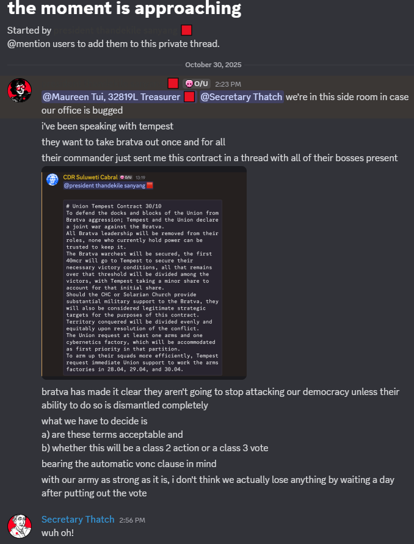
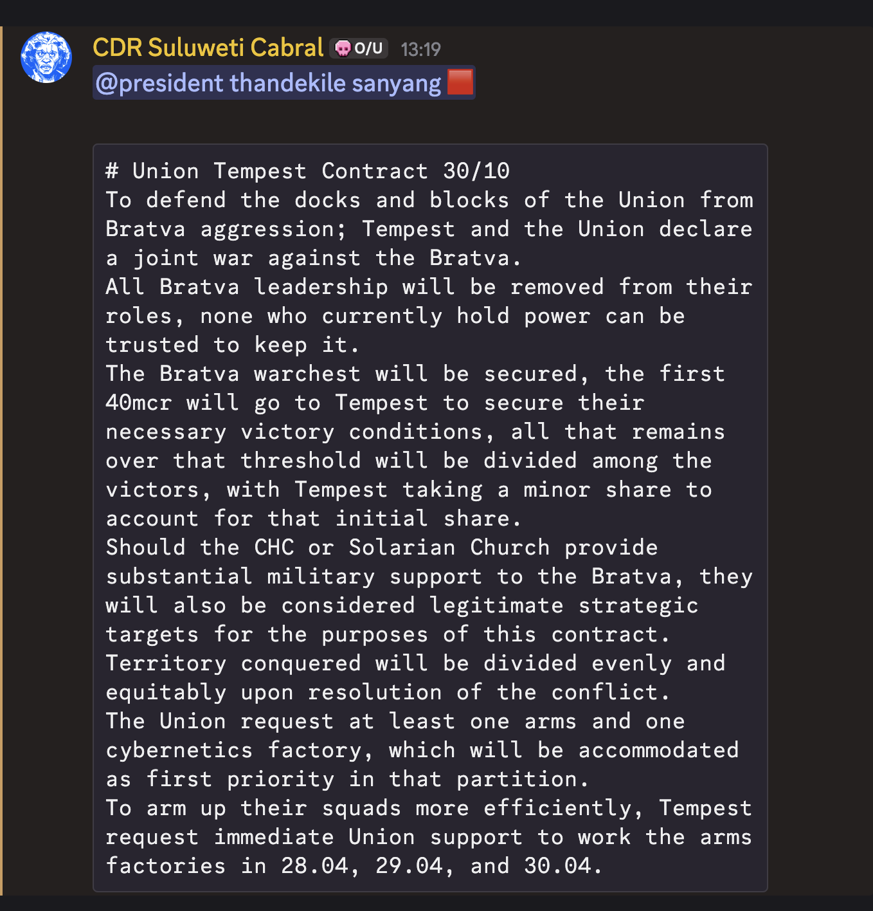
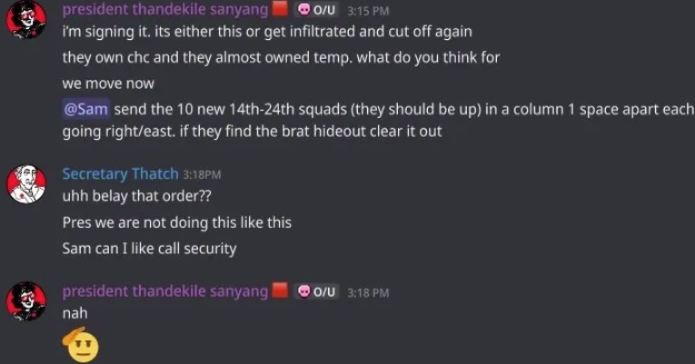
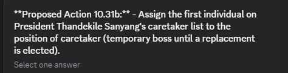

The Death of Sanyang, Part 1: The Death Itself
I'm calling this whole thing a work in progress otherwise I'll never post it.
I'm writing this in part to explain to my friends why they haven't seen me in a month, and so I am trying to assume no knowledge of Over/Under. However, in many ways this is not the best introduction to Over/Under: it involves a lot of custom GM adjudication and absolutely no gambling, small businesses, yuri, etc. This mostly relates to the most intense final act of the game, for me at least. But I don't know if I'll get around to writing up the first part - the magic of those days is hard to capture.
I am obviously not unbiased, and my view of things is incomplete. I have only been able to quote a small fraction of the things which were said. If anyone else writes up their view of the events, I'd like to link it here.
Background
If you played the game you can ignore most of this.
Over/under is a >1000 person month long discord game mostly centering around the politics of several factions. While factions are themed around organizations, each operates more like a state with an army, intelligence capabilties, and control of physical territory on a map. Each has three leaders.
To my friends who don't play RPGs, I will note I was playing a fictional character whose actions do not reflect my real life beliefs and values (except for about the train).
Terminology and concepts
OOC: Out of character. ((This formatting means an out of character comment. There is some variation in how people used this formatting.))
Bosses: players who can assassinate, move troops, use faction resources, run intel ops, add and remove people from factions, and otherwise interact with the GM directly. Restricted in action through in-game bylaws, which can be broken. By default each faction has 3.
Denizen: All other players. They can send and recieve money, be automatically paid by their faction, must spend money daily to survive, can accept an invitation to join a faction from a boss, initiate a Vote Of No Confidence, and vote in referendums. Generally cannot interact directly with the GM, for his sanity. The number of denizens in a faction determines the size of its military and workforce, but this is abstracted.
Action classes: Class 1 can be done by one boss, class 2 if all bosses agree, class 3 after a referendum put to the denizens of a faction.
VONC: "vote of no confidence", the one type of referendum that a denizen can force, which removes a boss.
cr: credits, the unit of currency. 11 cr is the minimum daily lifestyle expenditure for a denizen, 1010 is the max. A cheap intel op is 50kcr.
The Choke: A deoxygenated part of the station below the main station. Those who cannot pay the O2 tax are sent there and never heard from again. Horrific things are rumoured to lurk down there.
Key factions
The Union aka the Teamsters aka the Local: One of the more democratic factions, but nevertheless a flawed democracy. Trade union themed; controls the docks and factories, and has the most members (330 at its peak). Became extremely wealthy through the drug trade, a fact apparently most denizens didn't know.
Bratva: Technically owns the station, Russian mob themed. Strongest at infiltration and assassination. Membership is secret and Bratva infiltrators can be anywhere. In the process of undergoing major reforms to be less murder-y. It was not widely known that members that join Bratva no longer count for their other faction's population count, which determines their economic and military strength.
Tempest: Mercenary group that transitioned from a military dictatorship to a well-functioning democracy throughout the course of the game, also very lesbian for some reason. Best at war.
CHC: Canyonheavy collective. Hacker collective who control a crypto-currency that also allows for intelligence operations, many believed it to have ties to Bratva. Best at intelligence.
The Solarian Church (a religion based around drug smuggling and a close economic ally of the Union) do not really feature in this story, and Stratemeyer (a corporation) no longer existed by the time of these events. I may have more to say about the Solarians in a later blog post.
Key players (union):
President Alcyone (played by me), who started as a denizen and later became President. By the time of the events here, was generally affiliated with the more militant, hardline side of politics and with ties to extremist groups (see tylerb below), but in favour of democratic reform.
President Sanyang, a hardliner who was willing to do anything necessary to maintain independence from Bratva.
Secretary Thatch, moderate, pro-peace, and Bratva-friendly. Made a comment about eating ziti during a pivotal moment early in the game.
Treasurer Maureen Tui, working behind the scenes (largely for time zone reasons) to turn the Union into one of the biggest economic players on the station. Politically midway between Thatch and Sanyang, less militant than Alcyone.
Key players (bratva):
Adjudicator Jess Levine, responsible I think for violently enforcing Bratva law, but who on a personal level was generally pro-peace and representative of the reformist branch of Bratva (also originally a denizen I think).
Obschack Sylvana, whose formal role I don't know but who bridged the more violent old-school Bratva and the new, more peaceful version and was ultimately more aligned with the latter.
Other relevant characters
Interim President/Secretary Fedor, loyal perpetual interim leader, trusted by everyone, politically uncontroversial, a consensus pick for a caretaker boss in a crisis.
Jasmine Gold, a Bratva double agent for the Union in general and Thatch in particular.
Tylerb KILL FUND MANAGER: would need a separate blog post to explain but he went around publicly raising money to assassinate bosses and was a close associate of Alcyone.
Jenny Calabrese: Prominent member of the now-defunct Stratemeyer corporation, one of the first high profile asassination targets, was assassinated while running for office. Her death caused a great deal of fear about the same happening to us.
"beefstink": the handle of an infamous and highly controversial hacker who made his way into CHC leadership. Most public face of CHC.
Also, Sam is the GM.
Bratva Fears and The Purge
Very early on, Stratemeyer was taken over by a coalition of all other factions, but especially Bratva. Bratva greatly weakened them by recruiting away their members (members recruited by Bratva no longer counted as members of the faction, causing the faction to have a much weaker military than they realized.) They also assassiated someone immediately before they got promoted to Boss. They were the most visible members of the destruction of Stratemeyer.
Some time later, a large number of secret members of Bratva were found to be in the union. We could not reach a consensus on removing them despite fears this was a prelude to a Bratva takeover similar to that of Stratemeyer, in part because the members of Bratva were opposed.
Sanyang unilaterally spent 2 million dollars on an intelligence operation to get all of their names and then personally expel them, including double agents loyal to the Union. This exceeded her authority as president. One of these double agents was Thatch's (Jasmine Gold), and Sanyang did not trust Thatch's loyalty. She also stated that failing to expel any double agents would put their lives in danger, as Bratva would then suspect them. This entire incident greatly worsened Union/Bratva relations.
She called a VONC on herself in acknowledgement of the fact that her actions were illegal. She handily won it with 75% voting Nay. Nevertheless, this left the faction divided: 25% still resented these actions.
The Death of Sanyang
On October 30 at 2:19 PM pacific time, Zach Spacely notices Sanyang is deoxyganated (dead), indicating she was likely assassinated, as that was one of the few ways to die.
Here is a shortened version of the discussion that followed: I tried to capture key events as well as the overall tone. Commentary and clarifications are in square brackets.
Arthur McBagel: it's real. She's dead
Goldie Walsh: Fuck. How could they
Fedor Netlau : [liaison at the time, an elected denizen position] Please try to remain calm, let's not spread any rumors until we find out what happened.
Chief Lucas: I say radio silence, nothing leaves this hall right now
Fedor: Please wait for a press release from the bosses. We're all hands on deck right now people, please standby.
Secretary Thatch: I WAS IN GHE SHOWR
Lucas: We are not without leadership. One thing this Union stands strong on is coming together and operating as a unit. Losing our president was a hit but only one part of our Union as a whole.
Secretary Thatch: Stand by everyone. Sadly there is an explanation for this
Chief Lucas: The Blocks [the general public] are aware that the pres has been whacked off [note: assassinated, this was a running joke]
Ayva Bellharn: That broke containment fast
Ding Fringler: Shit, I guess Bill can shut the fuck up about the Vote of No Confidence [Bill had tried calling a second VONC on Sanyang]
Mouse: I miss her already.
Zach Spacely: The news broke to the public before anyone in here said anything.
Arthur McBagel: face in his hands Never have I ever had my boss assassinated sob
Mondo Terminal: You see a Teamster on the Street, let em know. The Code Word is "Lock Out Tag Out". We dont engage with threats or mocks from anyone. Stick together. You see someone with a wrench or a loader about to rock it, you keep em in check. We go all at once or not at all. The Prez was got, and.... we'll know the details soon. No one else Dies tonight. Not tonight.
Fedor: I just...don't fucking know everyone, I don't know what to think right now.
(later)
Fedor: please wait for leadership to brief us before jumping to any conclusions please, let's wait a bit before we start shouting at each other, trying to get into fights, or debate in the union hall. We need an honest account of what happened, find out if any other teamsters are in danger, and then go from there. But please, do not do anything rash.
Thatch: Standby another moment more. We are not under attack
Wrenchie Jim: We need to go on strike in solidarity. Pull all of our comrades out of non union docks and factories. 🟥
tylerb KILL FUND MANAGER: Most def
All New: First step we burn down the ecstacy. [a bar at which we'd been having a party when the assasination happened]
tylerb: Rioting is in our tactical handbook but it has some break glass in case of emergency around the pages. We want the fullest scoop before we go hard.
Fedor: Anyone calling for direct violence right now is just playing into our enemy's hands. Fucking stay calm, keep composure, and we'll see what we have to do okay? Solidarity means closing ranks and sticking the fuck together in moments like this, we don't need lone wolves running off getting themselves killed or others hurt.
Thatch: President Sanyang was tragically killed by Local HQ security personnel while trying to launch a large attack.
(large chorus of confusion)
Thatch: Yes. I'm sorry
Stakhanova Lett: What the hell was pres doing on the ground???
Fedor: I feel like I'm going to be fucking sick...
tylerb KILL FUND MANAGER: Well this would HAVE really taken the wind out of our sails if we were mid-riot
Alcyone: Listen to tylerb the voice of calm and reason ((♥️))
tylerb KILL FUND MANAGER: Calm Fund Manager
Fedor: Not killed by our own people right? Not friendly fire, please don't tell me it's friendly fire, oh fuck oh god
Russel Slade: Like, they were a traitor and we took ‘em out? 😰 (this ain’t confirmed, no one run with this.)
Fedor: I can't fucking believe that, I refuse to, there's no fucking way
Russel Slade: I’d prefer friendly fire.
Xark Gorvus: Pres was getting pretty funny with the extrajudicial actions Speaking no ill of the dead
Fedor: Now is not the fucking time, I want a full fucking explanation before I start pointing fingers at anyone.
Thatch: Screenshots and a more official statement are still to come. But im telling you now. Today President Samsung sent us a contract from Tempest that would officially kick off war against the Bratva, and if it was needed, CHC + the church too. I pulled her aside to talk it out. Or yell at her, idk. She tried to “lock in” a station-wide safehouse sweep with our 10 new squads. I tried to stop her, we both called HQ security. My squad got there faster, she didn’t stand down, and…. yeah.
Kade: well this just got a whole lot messier
Stakhanova Lett: Are you telling us pres started war as Class I action?! After two VONCs?? [note: class 1 actions can be taken unilaterally by a boss, war is not one of them.]
Fedor: I need to see the fucking proof. President Sanyang taught me how a union is supposed to work, how we're supposed to stick together, help each other out. I just cannot fucking believe this happened until I see hard evidence.
Thatch: I wanted to arrest her.
Stakhanova Lett: Why was live fire during arrest?!?!
"Big" Bill Xavi (replying to Thatch): Thank you for standing for union values, comrade secretary. Bill is stunned [note: Bill as one of the main leaders of the pro-Thatch faction becomes important later, but not in this blog post.]
Thatch: The Local 10th arrived, I said stop her, and the Local 11th was close behind, (we waited on a rules adjudication), and it happened. This wasnt a power play or anything stupid. It was messed up. Im probably going to step down.
Alcyone: We should elect a new boss first though Thatch don't do anything while we're down a leader we can always VONC you later
Kelam: I received this from the president before her death. For what its worth, she had someone in mind for succession and thoughts on the subject. [screenshot of Sanyang asking tylerb to step up. It later came out that she asked two people simulataneously-ish and tylerb asked them to go with the other one.]
"Big" Bill Xavi (replying to Thatch): comrade, please. if you are concerned, call for vonc, but now we need your leadership more than ever.
Maureen I can't beleive I have to say this. DON'T ANNOUCE IF YOU'RE A POTENTIAL SUCCESSOR ITS A HUGE SECURITY RISK Do you want to be the next Jenny Calabrese?
Kelam: Fwiw, Tyler told me to post it
Citizen Hark Worman One other thing we need clarity on: we've heard rumours of big movement from Tempest, is there any immediate threat to the union from them or anyone else right now? If so I'd be happy to rally round Thatch and Maureen until it is resolved, but if not we need to get this sorted.
Jerome Stanforth ((Ok, and this feels really dumb but - if the story's true, WHY WAS THATCH IN THE SHOWER?!))
Thatch ((the Happenings were a few hours ago. we were waiting on a rules adjudication and went about our business. I thought I had 10 mins. Fail))
An Official Statement
Thatch posts some screenshots to our internal news channel.
Thatch here. Today President Sanyang called us into a side office and showed us this.
 I was with Pres on everything. Not this.
I tried to talk her down 1 on 1. After a little talking she tried to begin a sweep-and-clear for a "Bratva Boss safehouse" using the ten squads we just raised. She wanted to "lock in" the move, I tried to stop that, we both called for HQ Security, the Local 10th and Local 11th. (I took this pic before the standoff and subsequent ruling. This is a HIGHLY sensitive thread) The 10th arrived first, listened to me, she didn't stand down and... that was that.
Immediate next steps: A replacement, and a short war
The mime: the mime points to the new bulletin, and guestures 🤷 📜 ❓  they seem to be asking if we know who is on that list
tylerb KILL FUND MANAGER: I think it’s Shooter McCrazy If it is me I’d prefer to be named. I really do hate to miss a chance to dare the opposition to kill me. If they kill me it will accelerate my end game.
skipping forward in time
tylerb KILL FUND MANAGER: President making a whole lot of sense in her last words We are at war and Chc and bratva are already merged This is how things always end. In a power struggle.
Dathan Drills: Personally, I wanna see the details of this Tempest contract first. Seems like it might be a big piece of the puzzle.
tylerb Voting to oust thatch myself. Not bc I’m sure but bc I’m suspicious. Enough to shudders participate in our vote blows dust off a small wooden box and proceeds to assemble a ceremonial ball point pen that hasn’t seen light for many years.
Wer Gost: Should we vote whether to go to war now too? You know, since the contract went up and all, and it was the inciting incident. Too soon? If not, will we lose the contract? If we delay till everyone is in place is that too late, or is it just one thing too many to deal with now, what with the whole developing situation?
Fedor: Uhhhh no? We should not vote to go to war right now? With who? The bosses just said we're not under attack by anyone outside of the faction didn't they?
Xark Gorvus: Those screenshots from thatch are going to be inflammatory enough they might start a war themselves
The debate continues but with no clear guidance from leadership. Much talk of how Tempest are our natural allies, several people including tylerb imply they have Tempest contacts
Xark Gorvus: Folks be talking about this in the same breath as Strat [Stratemeyer, who were destroyed from the inside]
Tempest declares war on Bratva in a broadcast, which I have edited for length
From what we can tell at Tempest, President Sanyang was killed tonight by Union Security Forces, following a disagreement with Secretary Thatch. The catalyst for that disagreement was a Tempest Contract, sent to Sanyang under the understanding that Tempest and the Union were both cooperating in full.
It is true that the contract was structured around a declaration of war against the Bratva. We, and President Sanyang both believed that this was necessary for the future of the Dream.
[...]
We could continue to maintain this "peace", where violence happens in bars and shadows, and the faction mosts adept at assassinations continue their hidden and violent rule. Or, we could seek better. Seek Peace. Seek Mercy. Face the consequences of both.
[...]
Tempest Company Declares War Upon the Bratva.
[...]
We seek to oust the leadership; to put an end to the reign; to liberate all those droogs [Bratva denizens] that cannot leave by choice under threat of Death. This is not the start of a war; no, that war has been raging as long as Shestyorka has celebrated the murder of Dreamers; as long as the Bratva Leaders have kept power by an iron fist; as long as this station runs at their whims, not at our will. This is the beginning of the end to that.
[...]
The reaction was largely supportive among ordinary denizens in the union, but we were helpless to act.
Jerome Stanforth: I am 100% behind Tempest going to war and my one regret is that we don't have boots on the ground right next to 'em
tylerb: I have huge respect for our departed president not because of her title but bc she could make an unpopular choice and stand on business. I am against the appearance of us accepting her getting disappeared
Bill Xavi: Unpopular choices aren't to be taken in a democratic organization. We have rules and bylaws for a reason.
hnc3313: Leaders can start a vote for war though?
Berwick: Problem is right now we have no president and the secretary is trying to abdicate.
Stakhanova Lett: With the news being broadcast over the station, I do not think we have a choice to want or not want war. Bratva will respond - I believe we are already essentially at war, with or without the remaining bosses' votes.
The next few hours, and days
There is a long pause before a permanent new president is instated: almost a week, including a three day game pause, time to instate Fedor as interim president, a day of nominations, a day of voting, and then time to switch over to Alcyone (me) after winning the election.
Meanwhile, without Union support, Tempest and Bratva negotiate a peace within a few hours. Bratva promises reform during peace talks, particularly in allowing members to leave alive (also one boss on each side agrees to be ritually murdered for reasons that were never very clear to me, but which it seems essentially removes the most pro war person in each faction from the game).
One of the CHC bosses named "beefstink" openly joins Bratva, which in the Union is seen as an alliance or even a merger between the two. Rumours abound that beefstink is also consolidating power in the Solarian Church, which played a key role in peace talks and in reform within Bratva. Tylerb openly campaigns for beefstink's death. Many within the Union percieve the Bratva as having eliminated their military opposition and begun consolidating power while we are at our weakest, with calls for peace being a prelude to an attack.
The true story of the two hour war and its fallout needs to be written up by someone who isn't me, as those involved saw it very differently.
The story continues here.